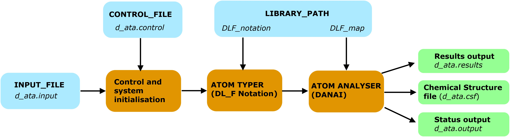

Structures and operations¶
This page illustrates the software structural aspects and provide brief summary how it works.
D_ATA is operated via several input files and control options without any scripting capability.

File structures
Diagram below shows a flowchart of the Program operations.
{kind=link}
D_ATA package comes with the following input file components:
- INPUT_FILE that comes with the default filename d_ata.input. This is where user’s configurations are defined.
- CONTROL_FILE that comes with the default filename d_ata.control. This is where options are selected to produce the desired results.
Most users will access the above mentioned files when running D_ATA. Files below are located in the lib/ folder. Do not change or delete these files unless you know what you are doing.
- DLF_notation library file, which indicates Chemical Groups that are reconisable by D_ATA, together with the unique index reference to each Chemical Groups.
- DLF_map, an interaction mapping reference. D_ATA uses the information to decide types of interaction presents in the system.
In addition, a path entry file, d_ata_path, must always locate at the D_ATA home directory. This special file specifies the directory paths and names of various file components.
Operations
If you wish to have a quick taste how D_ATA operates, go to this page - Ready, get set, go.
In summary: it is very easy to run D_ATA. Just insert input configuration files in INPUT_FILE and then run D_ATA. In most cases, options in the CONTROL_FILE do not need frequent change.
Program execution
Steps below show what happens when D_ATA is run:
- Read dl_a_path.
- Read CONTROL_FILE.
- Read configuration (input) file, located in the INPUT_FILE.
- Determine and annotate atoms in DL_F Notation (atom typing).
- Write out atom types in d_ata.csf, a chemical structure file.
If options to carry out atomic interaction analysis:
- Identify non-bonded interactions, classify according to chemical bahaviour of atoms.
- Results analysis in terms of various modes of atomic interactions.